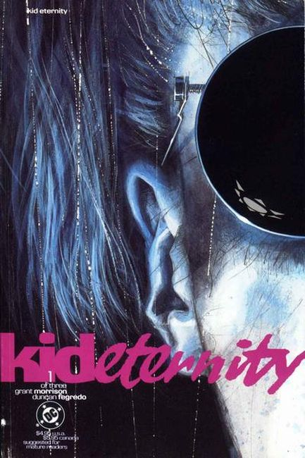
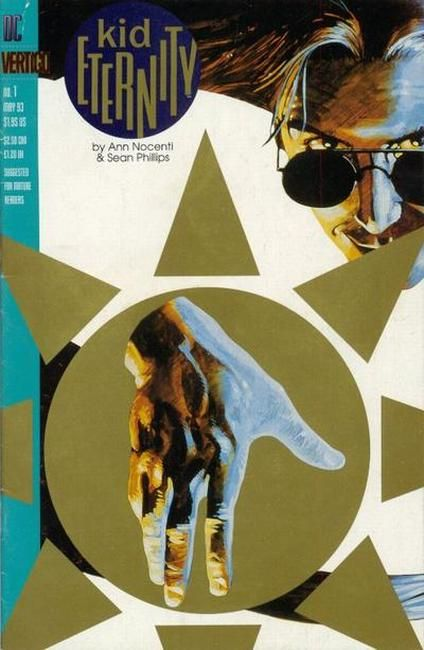

Kid Eternity is a fictional character, a comic book superhero that premiered in Hit Comics #25 written by Otto Binder, drawn by Sheldon Moldoff, and published by Quality Comics in December 1942. All of Quality's intellectual properties were sold to DC Comics in 1956 (though most of the said properties had lapsed into public domain by that point), including the character. The character has continued to appear (albeit infrequently) in DC comic books since his revival in the 1970s.
In 1956, Everett M. "Busy" Arnold, the owner of Quality Comics decided to leave the comic business entirely for the more profitable arena of Men's Adventure Magazines. He sold the Quality Comics line to his competitor, DC Comics. DC kept a number of Quality's titles running, but not until the 1970s did they look at the long-cancelled superhero characters (with the introduction of the Freedom Fighters).
The Kid was originally a nameless boy (who remembered being called only 'Kid' by his 'Gran'pa') who was killed when a U-Boat sank his grandfather's fishing boat during World War II. Due to a supernatural mix-up, however, he was killed 75 years too soon (similar to the plot of the 1941 film Here Comes Mr. Jordan).
To rectify the error, the Kid was brought back to life for another 75 years with the mission of upholding good in the world. He was given the power to summon any good historical or mythological figure or animal by saying the word "Eternity" as well as to use the same word to make himself material or immaterial and invisible. Kid Eternity was further assisted on his duties by the clerk who'd made the error, Mr. Keeper. He is sometimes shown summoning fictional figures, like Jean Valjean or the Witches in Macbeth. In Kid Eternity #2 he shows time travel ability.
1946 #1:
"Terror From the Tomb," script by Bill Woolfolk, art by Al Bryant; The beastly Thuggoths, evil counterparts to the phoenix, emerge from an Egyptian tomb, and the Kid summons King Tut to re-imprison them. "The Land of the Amazons," script by Bill Woolfolk, art by Al Bryant; Kid Eternity must combat Queen Matilda and her Amazon-like sisters, who were enslaving men until she was finally shown how superior men were. Untitled Snap Shotz story, script and art by Al Stahl. "There Lies Treasure" text story. "The Black Diamond of Doom," script by Bill Woolfolk, art by Al Bryant; Kid Eternity chooses to finish off the evil Kali with his own fists, sending him to a watery grave.

Written by Grant Morrison
Illustrated by Duncan Fegredo
1991 #1:
He's neither dead nor alive. He's KID ETERNITY, a teenager endowed with supernatural powers and the ability to bring back the dead - a gift from the powers above for being taken by death ahead of his time. Now the free-spirited Kid Eternity is back as an agent of Chaos, in a world that's just a bit too ordered for his taste. The Kid must free his partner, Mr. Keeper, from indentured servitude in Hell before he can get on with his mission of undermining the forces of Order. Kid Eternity uses chaos magic to elevate humanity's existence, but this path to good intentions is paved with demons, death and madness...especially when his way is blocked by a sleazy evangelist and a stand-up comedian. Before this nightmarish excursion into the netherworld has ended, everyone will be swept away in a rush of insanity that sheds new light on good and evil, life and death.

Written by Ann Nocenti
Illustrations by Sean Phillips
1993 #1:
Ever wonder who's calling the shots? Ever wonder if those in control are reviewing all the resumes? If not, consider the case of Kid Eternity. Everyone knows someone like the Kid - the dude who seems just too cool to live. In his case, though, it's true. Kid Eternity is dead, though he tries not to let that cramp his style. In a lot of ways, he's a pretty typical teenager - more interested in the world in his head than in the job at hand, which is to help humanity raise its consciousness and climb the next rung of evolution's ladder. Okay, so the Kid can call on anyone in all history to aid him in his quest, but there we go assuming the Kid's going to notice it when he needs help. The Kid has this small denial problem. When your whole (after)life is just one damned thing after another, you tend to be pretty jaded, and things have to get awfully weird before the Kid gets moving. This eccentric ongoing series combines throwaway snippings and clippings of philosophy, psychology, mythology, religion and things that go "bump" in the night, all within the framework of a fast-moving story.